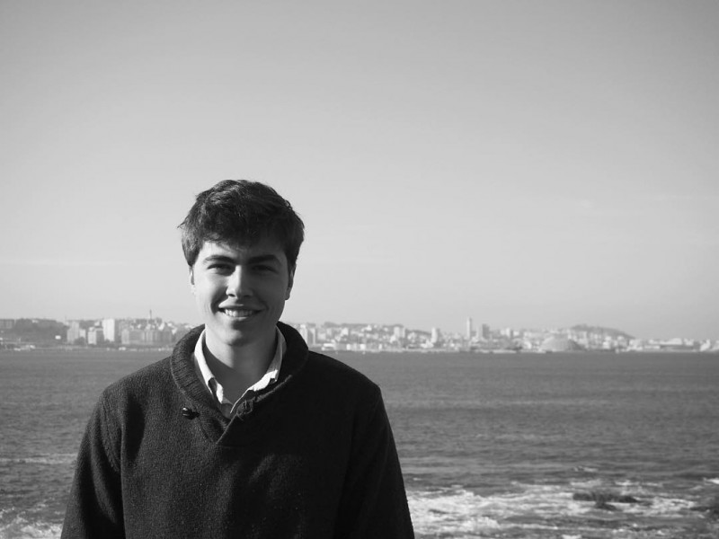

March 31, 2017
Green Leaping to Spain

Finely’s friend Javi writes today’s post from Universidad CEU Cardenal Herrera in Spain where he is studying medicine. Javi and Finley became friends while he was on an exchange program to the US. Thank you Javi for sharing your story of inspiration and for reminding us how kindness can make a difference in this world.
“By meeting Finley I learned what it was to be humble and caring. Nothing could show it more than all the work she has done to make a change in the environment and the inspiration she always tried to put in every single person she met.
She’s done a job that since I came back to Spain from the US I’ve been trying to expand. Every little collaboration can lead to huge changes in the world. Recycle, try to change others’ mentality, help others.
Mostly, I have to say thank you. Thank you Finley for teaching me things without trying. Thank you for changing my way of thinking. Thank you for leading me to my career. Thank you for all the songs we’ve listened and danced out in your car. But most of all, thank you for being my friend.”